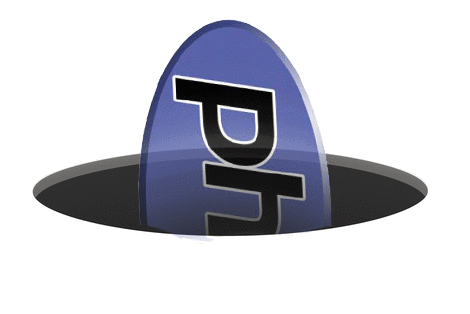

簡単でクロールされるサイトマップの書き方
サイトマップという言葉は昔からありますが、Googleがクロールするするサイトマップがどんなものか知っていますか？
例えば http://mvn.hatenadiary.com/sitemap.xml?page=1 のようなものです。
このサイトマップはGoogleがYahoo!、Bingがクロールのために使うものです。
このサイトマップの正しい書き方を覚えれば、あなたのWebサイトがきちんとクロールされるようになります。
導入の方法
まず、Googleウェブマスターツールに登録します。
サイトを登録するには、自分のサイトの<head>...</head>の中に、Googleに指定された<meta>タを貼ることが一般的です。
ブログなどではまた違う方法が必要な場合もあります。
サイトマップの書き方
次に必要なのがサイトマップです。
サイトマップは、次のようなXMLファイルになります。
<?xml version="1.0" encoding="UTF-8"?>
<urlset xmlns="http://www.sitemaps.org/schemas/sitemap/0.9">
<!-- ここからURL -->
<url>
<loc>http://example.com/</loc> <!-- URL -->
<priority>1</priority> <!-- 優先度 (0 〜 1) -->
<lastmod>2014-01-01</lastmod> <!-- 最終更新日 -->
<changefreq>daily</changefreq> <!-- 更新頻度 -->
</url>
<url>
<loc>http://example.com/credit/</loc>
<priority>0.7</priority>
<lastmod>2013-09-01</lastmod>
<changefreq>monthly</changefreq>
</url>
<url>
<loc>http://example.com/disclaimer/</loc>
<priority>0.7</priority>
<lastmod>2013-07-07</lastmod>
<changefreq>monthly</changefreq>
</url>
<!-- ここまでURL -->
</urlset>これが最も基本的な形で、<urlset>...</urlset>の中に<url>を入れることで複数のURLを指定する事ができます。
ポイントは３つで、
- xmlns を必ず指定する
- urlのリンクは
<loc>...</loc>の中に書く <priority>に優先度を 0.0から1.0まで の小数で指定する。
これだけです。忘れがちなのが最初の
<?xml version="1.0" encoding="UTF-8"?>です。XMLの基本ですが、HTMLを普段書いてると忘れがちですね。
URLが多い時はサイトマップを分割する
リンクが多すぎてサイトマップの読み込みが重い場合があるかと思います。
そんな時は、サイトマップを分割 することができます。
サイトマップを分けるには、「サイトマップを読み込むためのサイトマップ」を記述します。
<?xml version="1.0" encoding="UTF-8"?>
<sitemapindex xmlns="http://www.sitemaps.org/schemas/sitemap/0.9">
<sitemap>
<loc>http://example.com/sitemap-top.xml</loc> <!-- サイトマップ-->
<lastmod>2013-12-17</lastmod> <!-- サイトマップの最終更新日 -->
</sitemap>
<sitemap>
<loc>http://example.com/sitemap-search.xml</loc>
<lastmod>2013-12-17</lastmod>
</sitemap>
</sitemapindex>ポイントは３つです。
- xmlnsを忘れない
<sitemapindex>...</sitemapindex>で<sitemap>を囲む （<urlset>ではない）<loc>に サイトマップの URLを書く
ちなみに、<lastmod>もかなり重要です。なぜなら、日付が古いとGoogleがデータを更新してくれないからです。
サイトを更新したら必ずサイトマップも更新しましょう。
仕上げ
あとは、これらをまとめるだけです。
押さえておく点は、
サイトマップが１つの場合
- サイトマップをルートに配置 (http://example.com/sitemap.xmlなど)
サイトマップが分割されている場合
<sitemapindex>を書いたサイトマップをルートに配置 (http://example.com/sitemap.xmlなど)- その他のサイトマップは別の名前にする (sitemap-other.xmlなど)
あとは各種ウェブマスターツール（Googleはこちら）に送信するだけです。ここでサイトマップのテストもできるので、エラーが出たら作り直しましょう。
裏ワザ（上級者向け）

ここからは上級者編です。更新が激しいサイトの場合、サイトマップをいちいち更新してられないですよね。
そんなときは、PHP や Perl などを使いましょう。
方法は簡単で、ヘッダー情報をtext/xmlとし、.htaccessに下のように記述するだけです。
RewriteEngine On
RewriteRulle ^sitemap.xml$ sitemap.php<!--[ sitemap.php ]-->
<?php
$date = "(date 関数などで指定)";
$baseUrl = "(http://あなたのサイト)";
header("Content-Type: text/xml");
echo '<?xml version="1.0" encoding="UTF-8"?>';
?>
<sitemapindex xmlns="http://www.sitemaps.org/schemas/sitemap/0.9">
<sitemap>
<loc><?php echo $baseUrl; ?>/sitemap-top.xml</loc>
<lastmod><?php echo $date; ?></lastmod>
</sitemap>
<!-- (後略) -->これでsitemap.xmlにアクセスするとsitemap.phpが起動し、プログラムによってサイトマップが生成されます。これで楽ですね。
ただし、あまりに機械的な記述をするとページランクが落ちるので注意しましょう。
まとめ
サイトマップを作成することでクロールが早くなるという利点もあります。
ウェブマスターツールにはいろんな利点があるので是非もっと研究してみたいところです。

ソーテック社
売り上げランキング: 721
 | CSSだけで美しいレスポンシブデザインを実現『Pure』 |
 | 静的サイトジェネレータ『Octopress』の使い方 |
 | 完全に無料なGithubブログを始める方法 |
| 無料ブログサービスの大きな落とし穴 | |
|  | PHPの動的キャストで完全にハマった |